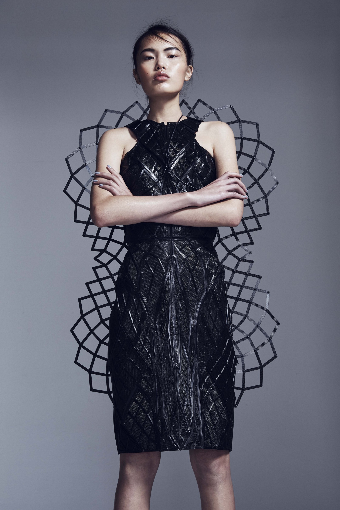
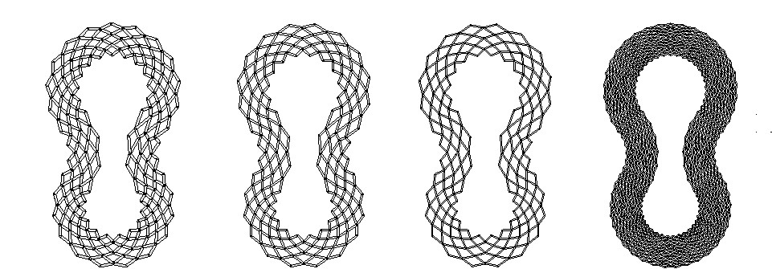
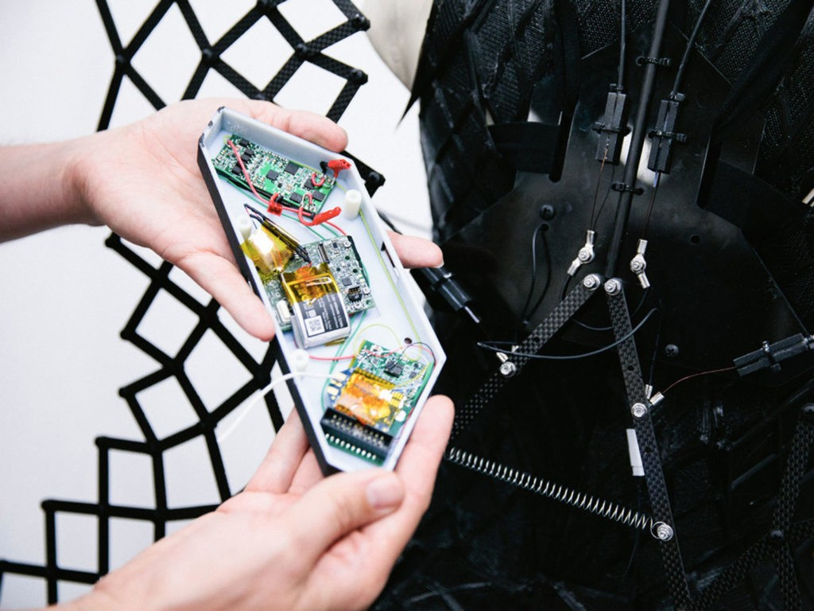

ADRENALINE
DRESS
DRESS
This heart rate responsive dress was done in collaboration with Chromat and the Intel wearable division and was featured in the New York City Fashion Show (2015). Studio Bitonti helped design and manufacture the dress, including the laser cut scissor joint assembly.
Press Release: Adrenaline Dress


We designed a scissor joint assembly that exaggerated the wearer's profile when expanded.
The density of the scissor joint assembly determined its expansion range

An actuator controlled by a Raspberry Pi was responsible for the assembly's expansion and contraction, and was disguised with a cover
that visually fit in with the 3D printed dress panels.

The dress was panelized into 3D printable swatches. The g-code of each swatch was programmed to create a textural
surface with "structural" ribs of different thicknesses.